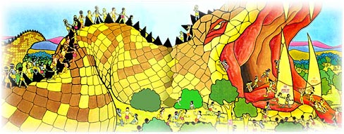

Agha representa la flaquesa en nuestro corazón de ser violentos y hacer daño a otros por odio, envidia y malicia. Un enemigo del amor puro.Gracias a Marie Therese Dubois por las artes de esta presentacion y a Bala Books.
Todas las Glorias Gopal y a los niños del mundo entero.